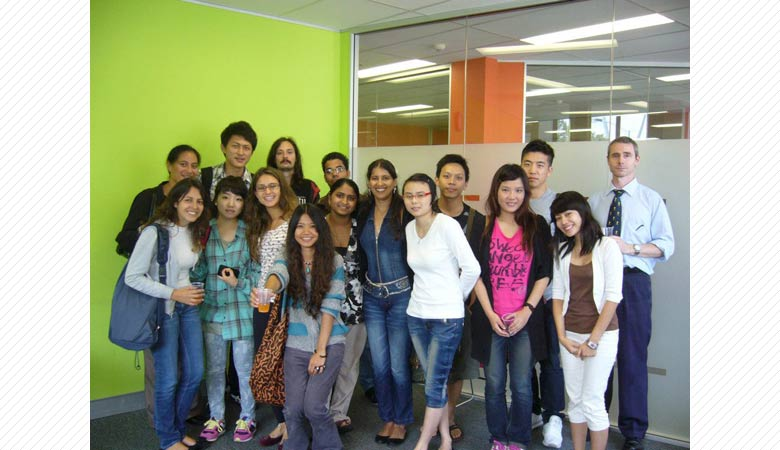
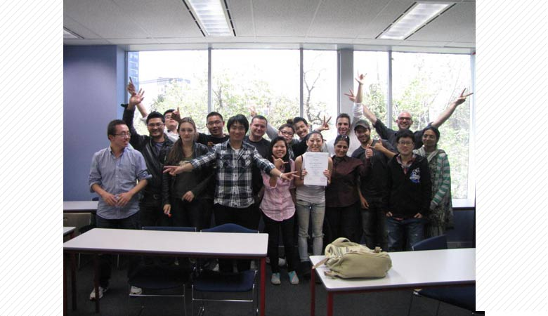
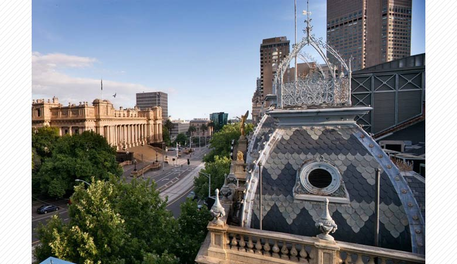
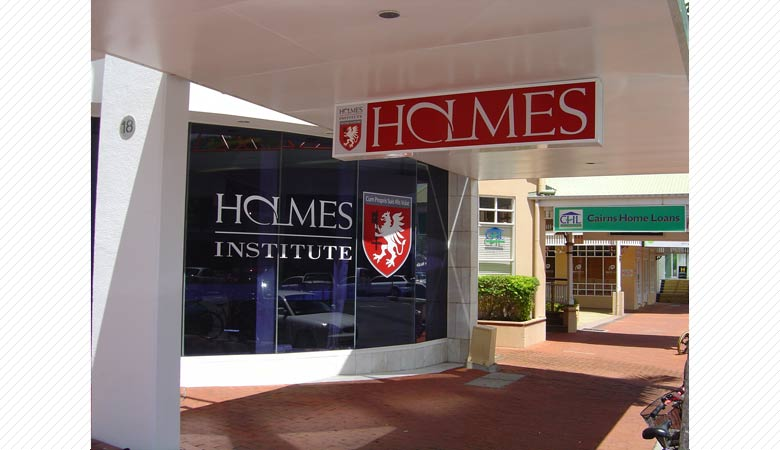

ホルムズカレッジとは？
ホルムズカレッジは親切で優しいスタッフによる細かいところまで行き届いた生徒のケア、
そして経験豊富な講師陣による英語の技術向上を中心とした充実した内容のレッスンを提供しております。

“ジョブクラブ”とアクティビティ
当校は皆様に“ジョブクラブ”という特別クラスをご用意しております。
この授業では皆様に英語での履歴書の書き方、英語での面接の受け答えの仕方、英語を使ったサービスの仕方など、
現地で仕事を得るのに非常に有効な情報をご提供しております。

ホルムズカレッジ ホストファミリー
現地の家族と一緒に過ごして、現地の生きた生活、生きた英語を体験してみませんか？
ぜひファミリーとオーストラリアならではの体験をし、素晴らしい思い出をお作りください。

英語プラス…
ホルムズの一般英語コースは毎週月曜日スタートです。全キャンパスでは一般英語コースと併せて様々なコースをご用意しております。
例えば、ビジネスコース、英語＋サーフィン、英語＋ダイビング等… オーストラリアでは様々な体験が無限大にできます。